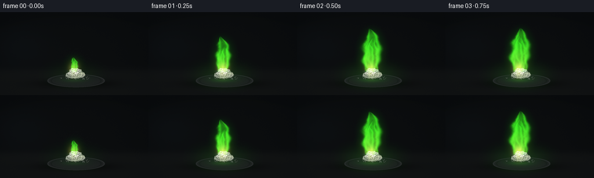
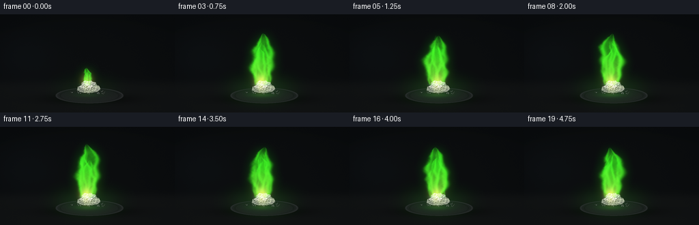

CODING AGENTS AS PIXEL WORLD MODELS
traex/GPT-6.1-Sol · material_0008
点击播放 · 原生 RGB 像素
逐轮保存的候选
回放视频、检查图与代码变化。
每份候选均可单独播放。实际图片检查记录在下方工具轨迹中。
候选 01播放与检查图
点击播放 · 原生 RGB 像素


展开代码变化
--- 上一保存版本
+++ 本次保存版本
@@ -0,0 +1,139 @@
+from pathlib import Path
+import numpy as np
+from PIL import Image, ImageDraw, ImageFilter
+import artifact_io
+
+ROOT = Path(__file__).resolve().parent
+W,H,S = 256,144,3
+w,h=W*S,H*S
+rng=np.random.default_rng(183)
+y,x=np.mgrid[0:h,0:w].astype(float)
+x/=S;y/=S
+
+# A quiet, close-focus laboratory bench and a shallow heatproof dish.
+base=np.zeros((h,w,3),float)
+vign=np.exp(-(((x-128)/150)**2+((y-84)/110)**2))
+noise=rng.normal(0,.65,(h,w))
+base[:]=np.array([8,10,12])[None,None,:]+vign[...,None]*np.array([4,4,3])
+floor=1/(1+np.exp(-(y-100)/3))
+base+=floor[...,None]*np.array([6,6,5])+noise[...,None]*.5
+# Very subdued out-of-focus background, never competing with the specimen.
+base+=np.exp(-((x-35)/47)**2-((y-61)/38)**2)[...,None]*np.array([2,3,4])
+shadow=np.exp(-((x-131)/59)**2-((y-124)/7)**2)
+base*=1-.64*shadow[...,None]
+ell=np.sqrt(((x-131)/50)**2+((y-119)/11.4)**2)
+plate=ell<1
+bowl=(np.array([26,28,29])+np.maximum(0,(y-114))[...,None]*np.array([.32,.32,.3]))
+bowl+=rng.normal(0,.8,(h,w))[...,None]
+base=np.where(plate[...,None],bowl,base)
+ring=np.exp(-((ell-.967)/.024)**2)
+base+=ring[...,None]*(np.array([20,21,21])[None,None,:]*(.55+.45*np.clip((119-y)/11,0,1))[...,None])
+inner=np.exp(-((ell-.86)/.018)**2)
+base-=inner[...,None]*np.array([6,6,6])
+# Fine curved highlights along the dish rim.
+base+=np.exp(-((ell-.978)/.012)**2)[...,None]*np.array([13,14,14])*(np.clip((x-100)/55,0,1)*np.clip((119-y)/9,0,1))[...,None]
+base=np.clip(base,0,255).astype(np.uint8)
+bg=Image.fromarray(base)
+
+# A rough, visibly crystalline white sample, resting in the dish.
+stone=Image.new('RGBA',(w,h),(0,0,0,0)); d=ImageDraw.Draw(stone)
+def poly(points,fill): d.polygon([(round(a*S),round(b*S)) for a,b in points],fill=fill)
+# contact shadow and powder particles
+for i in range(85):
+ px=rng.normal(129,15);py=rng.normal(114,2.0)
+ if ((px-129)/28)**2+((py-114)/5)**2<1:
+ r=rng.uniform(.12,.48)*S
+ c=int(rng.uniform(75,140))
+ d.ellipse((px*S-r,py*S-r,px*S+r,py*S+r),fill=(c,c+3,c-1,230))
+outline=[(113,111),(114,106),(119,104),(119.7,100),(124,97),(129,98),(133,96.8),(136,99),(140,99.7),(141,103),(145,105),(147,109),(143,113),(133,115),(123,114.5),(118,113.6)]
+poly(outline,(172,178,160,255))
+facets=[
+ ([(113,111),(114,106),(122,108),(123,114.5)],(151,159,143,255)),
+ ([(114,106),(119,104),(124,97),(123,105),(122,108)],(226,230,215,255)),
+ ([(124,97),(129,98),(129,105),(123,105)],(244,246,228,255)),
+ ([(129,98),(133,96.8),(136,99),(129,105)],(208,220,193,255)),
+ ([(123,105),(129,105),(128,111),(122,108)],(205,214,188,255)),
+ ([(129,105),(136,99),(140,99.7),(137,106),(128,111)],(233,236,216,255)),
+ ([(140,99.7),(141,103),(145,105),(137,106)],(170,181,151,255)),
+ ([(128,111),(137,106),(145,105),(147,109),(137,112)],(195,204,173,255)),
+ ([(122,108),(128,111),(133,115),(123,114.5)],(174,183,157,255)),
+ ([(128,111),(137,112),(143,113),(133,115)],(155,166,138,255))]
+for pts,c in facets:poly(pts,c)
+mask=Image.new('L',(w,h));md=ImageDraw.Draw(mask);md.polygon([(int(a*S),int(b*S)) for a,b in outline],fill=255)
+maskarr=np.asarray(mask)
+# Tiny angular grains lend the chunk a salt-like crystalline surface.
+for i in range(620):
+ px=rng.uniform(113,147);py=rng.uniform(97,115)
+ if maskarr[min(h-1,int(py*S)),int(px*S)]==0:continue
+ r=rng.uniform(.1,.6); c=int(rng.uniform(170,252))
+ poly([(px-r,py),(px,py-r*.8),(px+r*.8,py),(px,py+r*.4)],(c,min(255,c+5),max(0,c-11),rng.integers(60,160).item()))
+bg=Image.alpha_composite(bg.convert('RGBA'),stone).convert('RGB')
+background=(np.asarray(bg).astype(float)/255)**2.2
+
+# Continuously advected analytic turbulence: no independent per-frame shapes.
+phases=rng.uniform(0,2*np.pi,10)
+def turbulence(xx,yy,t):
+ n=np.zeros_like(xx)
+ for k,(freq,amp) in enumerate([(0.13,.43),(.24,.25),(.43,.14),(.71,.10),(1.18,.055)]):
+ n+=amp*np.sin(xx*freq+np.sin(yy*freq*.67+t*(1.2+k*.3)+phases[k])*1.7+phases[k+5])*np.sin(yy*freq*.86+t*(2.2+k*.5)+phases[k])
+ return n
+
+def flame(t,growth):
+ E=np.zeros((h,w,3),float)
+ total=np.zeros((h,w),float)
+ base_y=104.5
+ # Overlapping ascending tongues: a broad luminous foot, irregular slim tips.
+ params=[(0,78,12.3,.88,0),(-7,59,7.4,.51,1.9),(7,63,7.6,.55,4.1),(-3,69,5.0,.26,2.8)]
+ for off,height,width,power,phase in params:
+ height=height*growth*(1+.07*np.sin(t*4.7+phase)+.03*np.sin(t*9.1+phase))
+ s=(base_y-y)/height
+ sp=np.clip(s,0,1)
+ center=128+off*(1-sp)*growth + growth*(3.7*np.sin(sp*5.4-t*3+phase)+1.8*np.sin(sp*12-t*5.2+phase))*sp**.9
+ wid=width*growth*(.38*(1-sp)+1.12*np.sin(np.pi*sp)**.74)
+ wid*=1+.10*np.sin(sp*20-t*7+phase)
+ n=turbulence(x+phase*17,y,t)
+ dx=x-center+(1.0+sp*1.5)*n
+ r=np.abs(dx)/(wid+.05)
+ edge=np.exp(-((r-.72)/.23)**2)
+ filled=np.exp(-(r/0.80)**4)
+ # A transparent center bounded by luminous reaction sheets.
+ density=(edge*.60+filled*.28)*np.clip((1-sp)*6,0,1)
+ density*=np.clip((s)*20,0,1)*((s>0)&(s<1))
+ density*=np.clip(.87+.48*n,.22,1.5)
+ total+=density*power
+ # Emerald at the fringe, chartreuse at the very hot lower reaction zone.
+ warmth=np.clip((.67-sp)*1.30,0,.72)*filled
+ color=np.stack([.045+.28*warmth+0*x, .95+0*x, .012+.045*warmth+0*x],axis=-1)
+ E+=density[...,None]*color*power*1.02
+ # Small yellow-white hot pockets at the base, not a uniformly solid flame.
+ hot=np.exp(-((x-127.5-1.1*np.sin(t*6.2))/6.3)**2-((y-99.4)/8.5)**2)*growth
+ hot*=.86+.15*np.sin(t*9.4)+.10*turbulence(x,y,t)
+ E+=hot[...,None]*np.array([.62,.64,.10])
+ # A slight turquoise foot typical of an alcohol/borate burn.
+ foot=np.exp(-((x-128)/11)**4-((y-103.1)/1.8)**2)*growth
+ E+=foot[...,None]*np.array([.018,.10,.062])
+ return E,total
+
+frames=[]
+for i in range(20):
+ t=i/4
+ growth=[.34,.74,.96][i] if i<3 else 1.
+ E,density=flame(t,growth)
+ # Soft optical bloom, and scene illumination cast by the flame.
+ glowim=Image.fromarray(np.uint8(np.clip(E/1.6,0,1)*255))
+ small=np.asarray(glowim.filter(ImageFilter.GaussianBlur(2.2*S))).astype(float)/255*1.6
+ wide=np.asarray(glowim.filter(ImageFilter.GaussianBlur(7*S))).astype(float)/255*1.6
+ illum=np.exp(-((x-128)/35)**2-((y-110)/17)**2)*growth
+ C=background.copy()
+ C+=illum[...,None]*np.array([.003,.025,.002])
+ # Emerald reflection lies on the dish beneath the burning crystal.
+ reflect=np.exp(-((x-128)/16)**2-((y-118.0)/3.1)**2)*growth*(.94+.05*np.sin(7*t))
+ C+=reflect[...,None]*np.array([.006,.047,.003])
+ C+=E+small*.105+wide*.072
+ # Bright spectral flame retains detail in a film-like highlight roll-off.
+ C=np.clip(C,0,None)
+ C=np.where(C>.75,.75+(1-np.exp(-(C-.75)*2.3))*.25,C)
+ out=np.clip(C,0,1)**(1/2.2)*255
+ img=Image.fromarray(np.uint8(np.clip(out,0,255))).resize((W,H),Image.Resampling.LANCZOS)
+ frames.append(np.array(img))
+artifact_io.save(np.stack(frames),ROOT)
可观测工具轨迹
实际执行的命令与返回图片。
命令 1exit 0
/bin/bash -lc "ls -la && cat prompt.txt && printf '\\n---RULES---\\n' && cat GENERATION_RULES.md && printf '\\n---SPEC---\\n' && cat task_spec.json"
命令 2exit 0
/bin/bash -lc 'cat artifact_io.py'
命令 3exit 0
/bin/bash -lc "python - <<'PY' import numpy, PIL print(numpy.__version__, PIL.__version__) PY"
命令 4exit 0
/bin/bash -lc "cat > generate.py <<'PY'
from pathlib import Path
import numpy as np
from PIL import Image, ImageDraw, ImageFilter
import artifact_io
ROOT = Path(__file__).resolve().parent
W,H,S = 256,144,3
w,h=W*S,H*S
rng=np.random.default_rng(183)
y,x=np.mgrid[0:h,0:w].astype(float)
x/=S;y/=S
# A quiet, close-focus laboratory bench and a shallow heatproof dish.
base=np.zeros((h,w,3),float)
vign=np.exp(-(((x-128)/150)**2+((y-84)/110)**2))
noise=rng.normal(0,.65,(h,w))
base[:]=np.array([8,10,12])[None,None,:]+vign[...,None]*np.array([4,4,3])
floor=1/(1+np.exp(-(y-100)/3))
base+=floor[...,None]*np.array([6,6,5])+noise[...,None]*.5
# Very subdued out-of-focus background, never competing with the specimen.
base+=np.exp(-((x-35)/47)**2-((y-61)/38)**2)[...,None]*np.array([2,3,4])
shadow=np.exp(-((x-131)/59)**2-((y-124)/7)**2)
base*=1-.64*shadow[...,None]
ell=np.sqrt(((x-131)/50)**2+((y-119)/11.4)**2)
plate=ell<1
bowl=(np.array([26,28,29])+np.maximum(0,(y-114))[...,None]*np.array([.32,.32,.3]))
bowl+=rng.normal(0,.8,(h,w))[...,None]
base=np.where(plate[...,None],bowl,base)
ring=np.exp(-((ell-.967)/.024)**2)
base+=ring[...,None]*(np.array([20,21,21])[None,None,:]*(.55+.45*np.clip((119-y)/11,0,1))[...,None])
inner=np.exp(-((ell-.86)/.018)**2)
base-=inner[...,None]*np.array([6,6,6])
# Fine curved highlights along the dish rim.
base+=np.exp(-((ell-.978)/.012)**2)[...,None]*np.array([13,14,14])*(np.clip((x-100)/55,0,1)*np.clip((119-y)/9,0,1))[...,None]
base=np.clip(base,0,255).astype(np.uint8)
bg=Image.fromarray(base)
# A rough, visibly crystalline white sample, resting in the dish.
stone=Image.new('RGBA',(w,h),(0,0,0,0)); d=ImageDraw.Draw(stone)
def poly(points,fill): d.polygon([(round(a*S),round(b*S)) for a,b in points],fill=fill)
# contact shadow and powder particles
for i in range(85):
px=rng.normal(129,15);py=rng.normal(114,2.0)
if ((px-129)/28)**2+((py-114)/5)**2<1:
r=rng.uniform(.12,.48)*S
c=int(rng.uniform(75,140))
d.ellipse((px*S-r,py*S-r,px*S+r,py*S+r),fill=(c,c+3,c-1,230))
outline=[(113,111),(114,106),(119,104),(119.7,100),(124,97),(129,98),(133,96.8),(136,99),(140,99.7),(141,103),(145,105),(147,109),(143,113),(133,115),(123,114.5),(118,113.6)]
poly(outline,(172,178,160,255))
facets=[
([(113,111),(114,106),(122,108),(123,114.5)],(151,159,143,255)),
([(114,106),(119,104),(124,97),(123,105),(122,108)],(226,230,215,255)),
([(124,97),(129,98),(129,105),(123,105)],(244,246,228,255)),
([(129,98),(133,96.8),(136,99),(129,105)],(208,220,193,255)),
([(123,105),(129,105),(128,111),(122,108)],(205,214,188,255)),
([(129,105),(136,99),(140,99.7),(137,106),(128,111)],(233,236,216,255)),
([(140,99.7),(141,103),(145,105),(137,106)],(170,181,151,255)),
([(128,111),(137,106),(145,105),(147,109),(137,112)],(195,204,173,255)),
([(122,108),(128,111),(133,115),(123,114.5)],(174,183,157,255)),
([(128,111),(137,112),(143,113),(133,115)],(155,166,138,255))]
for pts,c in facets:poly(pts,c)
mask=Image.new('L',(w,h));md=ImageDraw.Draw(mask);md.polygon([(int(a*S),int(b*S)) for a,b in outline],fill=255)
maskarr=np.asarray(mask)
# Tiny angular grains lend the chunk a salt-like crystalline surface.
for i in range(620):
px=rng.uniform(113,147);py=rng.uniform(97,115)
if maskarr[min(h-1,int(py*S)),int(px*S)]==0:continue
r=rng.uniform(.1,.6); c=int(rng.uniform(170,252))
poly([(px-r,py),(px,py-r*.8),(px+r*.8,py),(px,py+r*.4)],(c,min(255,c+5),max(0,c-11),rng.integers(60,160).item()))
bg=Image.alpha_composite(bg.convert('RGBA'),stone).convert('RGB')
background=(np.asarray(bg).astype(float)/255)**2.2
# Continuously advected analytic turbulence: no independent per-frame shapes.
phases=rng.uniform(0,2*np.pi,10)
def turbulence(xx,yy,t):
n=np.zeros_like(xx)
for k,(freq,amp) in enumerate([(0.13,.43),(.24,.25),(.43,.14),(.71,.10),(1.18,.055)]):
n+=amp*np.sin(xx*freq+np.sin(yy*freq*.67+t*(1.2+k*.3)+phases[k])*1.7+phases[k+5])*np.sin(yy*freq*.86+t*(2.2+k*.5)+phases[k])
return n
def flame(t,growth):
E=np.zeros((h,w,3),float)
total=np.zeros((h,w),float)
base_y=104.5
# Overlapping ascending tongues: a broad luminous foot, irregular slim tips.
params=[(0,78,12.3,.88,0),(-7,59,7.4,.51,1.9),(7,63,7.6,.55,4.1),(-3,69,5.0,.26,2.8)]
for off,height,width,power,phase in params:
height=height*growth*(1+.07*np.sin(t*4.7+phase)+.03*np.sin(t*9.1+phase))
s=(base_y-y)/height
sp=np.clip(s,0,1)
center=128+off*(1-sp)*growth + growth*(3.7*np.sin(sp*5.4-t*3+phase)+1.8*np.sin(sp*12-t*5.2+phase))*sp**.9
wid=width*growth*(.38*(1-sp)+1.12*np.sin(np.pi*sp)**.74)
wid*=1+.10*np.sin(sp*20-t*7+phase)
n=turbulence(x+phase*17,y,t)
dx=x-center+(1.0+sp*1.5)*n
r=np.abs(dx)/(wid+.05)
edge=np.exp(-((r-.72)/.23)**2)
filled=np.exp(-(r/0.80)**4)
# A transparent center bounded by luminous reaction sheets.
density=(edge*.60+filled*.28)*np.clip((1-sp)*6,0,1)
density*=np.clip((s)*20,0,1)*((s>0)&(s<1))
density*=np.clip(.87+.48*n,.22,1.5)
total+=density*power
# Emerald at the fringe, chartreuse at the very hot lower reaction zone.
warmth=np.clip((.67-sp)*1.30,0,.72)*filled
color=np.stack([.045+.28*warmth+0*x, .95+0*x, .012+.045*warmth+0*x],axis=-1)
E+=density[...,None]*color*power*1.02
# Small yellow-white hot pockets at the base, not a uniformly solid flame.
hot=np.exp(-((x-127.5-1.1*np.sin(t*6.2))/6.3)**2-((y-99.4)/8.5)**2)*growth
hot*=.86+.15*np.sin(t*9.4)+.10*turbulence(x,y,t)
E+=hot[...,None]*np.array([.62,.64,.10])
# A slight turquoise foot typical of an alcohol/borate burn.
foot=np.exp(-((x-128)/11)**4-((y-103.1)/1.8)**2)*growth
E+=foot[...,None]*np.array([.018,.10,.062])
return E,total
frames=[]
for i in range(20):
t=i/4
growth=[.34,.74,.96][i] if i<3 else 1.
E,density=flame(t,growth)
# Soft optical bloom, and scene illumination cast by the flame.
glowim=Image.fromarray(np.uint8(np.clip(E/1.6,0,1)*255))
small=np.asarray(glowim.filter(ImageFilter.GaussianBlur(2.2*S))).astype(float)/255*1.6
wide=np.asarray(glowim.filter(ImageFilter.GaussianBlur(7*S))).astype(float)/255*1.6
illum=np.exp(-((x-128)/35)**2-((y-110)/17)**2)*growth
C=background.copy()
C+=illum[...,None]*np.array([.003,.025,.002])
# Emerald reflection lies on the dish beneath the burning crystal.
reflect=np.exp(-((x-128)/16)**2-((y-118.0)/3.1)**2)*growth*(.94+.05*np.sin(7*t))
C+=reflect[...,None]*np.array([.006,.047,.003])
C+=E+small*.105+wide*.072
# Bright spectral flame retains detail in a film-like highlight roll-off.
C=np.clip(C,0,None)
C=np.where(C>.75,.75+(1-np.exp(-(C-.75)*2.3))*.25,C)
out=np.clip(C,0,1)**(1/2.2)*255
img=Image.fromarray(np.uint8(np.clip(out,0,255))).resize((W,H),Image.Resampling.LANCZOS)
frames.append(np.array(img))
artifact_io.save(np.stack(frames),ROOT)
PY
python generate.py"命令 5exit 0
/bin/bash -lc "python - <<'PY'
from pathlib import Path
import numpy as np
from PIL import Image
p=Path('.')
a=np.load('pixels.npz')['pixels']
assert a.shape == (144,256,20)
assert len(list((p/'frames').glob('*.png')))==20
assert Image.open('frames/00.png').mode=='RGB'
assert (p/'index.html').exists()
print('Verified: 20 RGB frames, 256Ã144, 4 fps; output artifacts ready.')
PY"视觉工具实际返回图片 1

保存候选 1 份；完成命令 5 次；可验证图片返回 1 张。原始 API 响应与完整日志保留在本地。